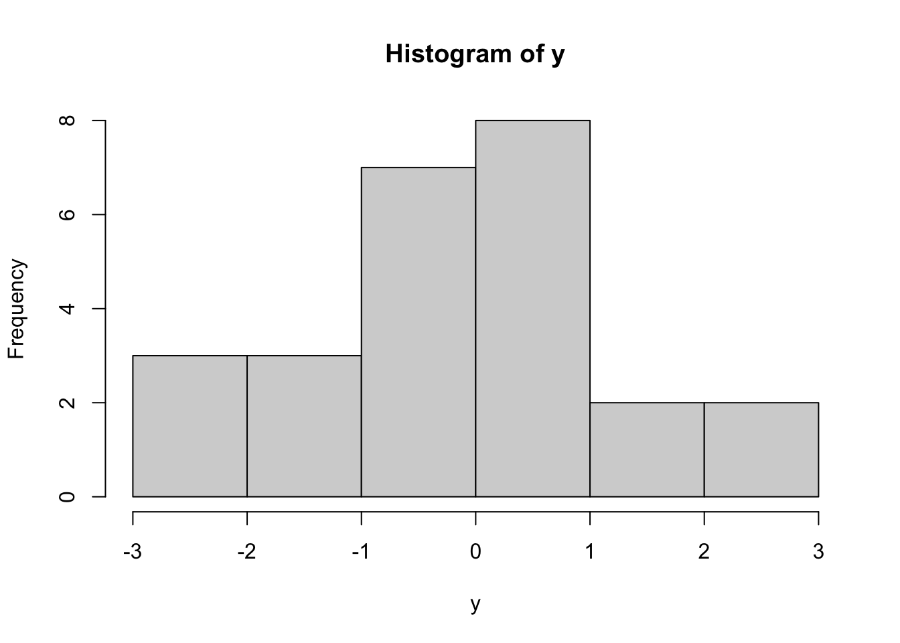
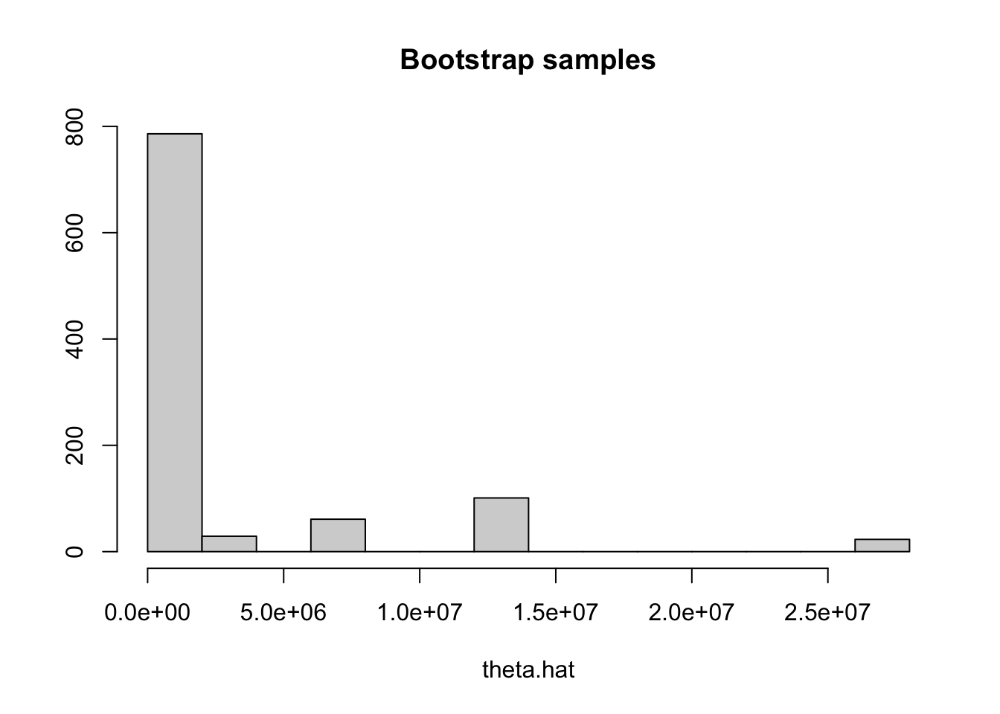
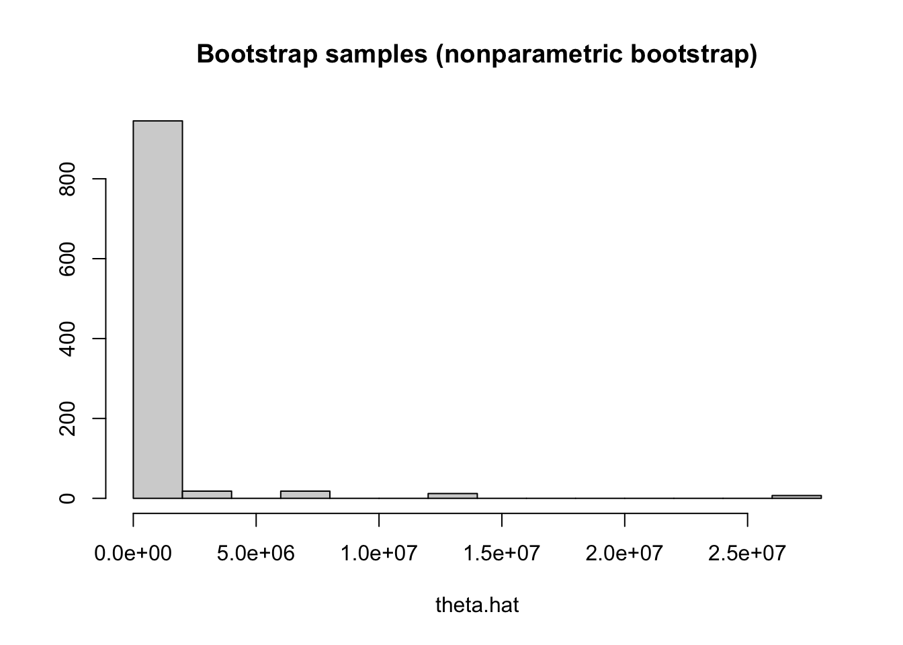
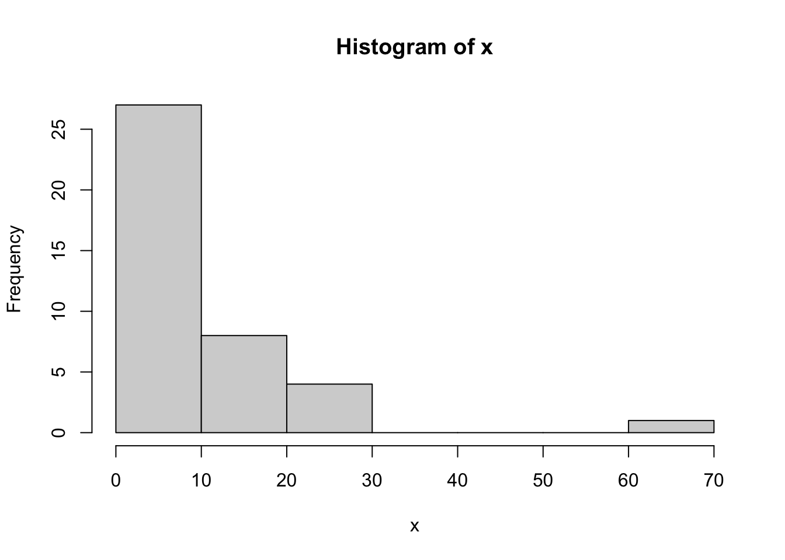

8 Distribusi Asimtotik MLE (Bagian II)
Gambaran Umum
Pelajaran ini memperkenalkan metode bootstrap—baik parametrik maupun nonparametrik—untuk menduga selang kepercayaan ketika solusi analitik tidak memungkinkan. Selain itu, Anda akan mempelajari metode delta dan pendekatan bootstrap untuk inferensi terhadap transformasi parameter. Melalui contoh yang melibatkan distribusi Bernoulli, Eksponensial, Normal, Geometrik, t, dan Pareto, Anda akan memperoleh keterampilan praktis dalam menerapkan teknik-teknik ini sebagai bekal untuk mempelajari inferensi statistik tingkat lanjut.
Tujuan
Setelah menyelesaikan pelajaran ini, Anda diharapkan mampu:
- Secara analitik, menentukan selang kepercayaan asimtotik untuk transformasi parameter yang diduga dengan pendugaan kemungkinan maksimum (“metode delta”);
- Menghampiri secara numerik selang kepercayaan asimtotik untuk MLE serta untuk transformasi parameter yang diduga dengan MLE menggunakan “optim” dan komputasi dalam R; dan
- Memperoleh secara numerik selang kepercayaan bootstrap untuk MLE serta untuk transformasi parameter yang diduga dengan MLE.
8.1 Selang Kepercayaan Bootstrap
Selang kepercayaan yang dibentuk di atas bergantung pada pengetahuan kita tentang distribusi hampiran bagi nilai dugaan \(\hat{\theta}\) dari parameter \(\theta\). Di atas kita menggunakan hampiran Normal (Gaussian) asimtotik untuk setiap MLE, tetapi ada cara lain untuk memperoleh distribusi hampiran bagi nilai dugaan \(\hat{\theta}\).
Salah satu pendekatan yang sangat umum untuk memperoleh distribusi sampling hampiran dari suatu penduga adalah bootstrap. Bootstrap mengandalkan sampel acak dari suatu distribusi hampiran, bukan distribusi tertentu yang diketahui secara eksplisit. Keuntungan mengandalkan sampel adalah bahwa kita TIDAK perlu benar-benar mengetahui distribusi yang menjadi sumber sampel; kita hanya perlu dapat mengambil sampel dari distribusi tersebut!
Tujuan setiap bootstrap adalah membangun metode untuk mengambil sampel dari distribusi penduga. Bootstrap biasanya melakukannya dengan (1) menghampiri distribusi data, lalu (2) menyimulasikan banyak himpunan data dari distribusi tersebut. Setiap himpunan data simulasi itu kira-kira berdistribusi sama seperti data sebenarnya dan dapat digunakan untuk memperoleh nilai dugaan parameter yang diminati. Dengan demikian, kita memperoleh (3) banyak nilai dugaan parameter, masing-masing merupakan realisasi dari distribusi sampling hampiran bagi penduga tersebut. Kita tidak mengetahui distribusi nilai-nilai dugaan ini, tetapi memiliki banyak sampel darinya, sehingga kita dapat (4) menghampiri selang kepercayaan atau besaran lain dengan menggunakan hampiran berbasis sampel.
Dengan kata lain, langkah-langkah bootstrap adalah:
(1)-(2): Simulasikan \(M\) himpunan data, masing-masing berukuran \(n\) dari distribusi hampiran data.
(3): Hitung \(\hat{\theta}^{(m)}\) dari setiap himpunan data, \(m=1,\ldots,M\).
(4): Dengan menggunakan nilai-nilai dugaan parameter dari langkah (3), peroleh selang kepercayaan hampiran.
Pada bagian berikutnya, kami menunjukkan sebuah contoh.
8.1.1 Selang Kepercayaan Normal Asimtotik untuk Data Berdistribusi t
Sebagai ilustrasi, perhatikan data berikut dari distribusi t. Di sini kita akan menyimulasikan data:
y=c(-0.71,-1.30,-0.13,-2.03, 1.62, 2.38, 0.48, 0.51,-0.69,
-2.32,-2.02,1.23,-0.25,0.76,0.65,-0.08,-1.20,0.99,
2.58,0.73,-0.09,-0.03,0.56,-1.44,0.13)
hist(y)
Data ini saling bebas dan berasal dari \(y_i \sim t(4)\), yaitu distribusi t dengan parameter derajat kebebasan sebesar 4. Jika kita tidak mengetahui nilai sebenarnya dari parameter derajat kebebasan (\(\text{df}\)), mula-mula kita dapat mencoba mencari nilai dugaan kemungkinan maksimumnya secara langsung. Namun, PDF distribusi t tidak menghasilkan MLE yang dapat diselesaikan secara analitik. Kita dapat menemukannya dari data dengan pendugaan kemungkinan maksimum numerik. Inferensi numerik di R dapat dilakukan dengan menulis fungsi negatif log-kemungkinan, lalu mengoptimisasikannya menggunakan optim.
## fungsi negatif log-kemungkinan dengan df dibatasi positif
nll.t=function(df,y){
if(length(df)!=1L || !is.finite(df) || df<=0) return(Inf)
value=-sum(dt(y,df=df,log=TRUE))
if(is.finite(value)) value else Inf
}
## MLE numerik berbatas; simpan dan periksa diagnostik pengoptimal
out=optim(4,fn=nll.t,y=y,method="L-BFGS-B",
lower=sqrt(.Machine$double.eps),hessian=TRUE)
if(out$convergence!=0L || !is.finite(out$value) ||
any(!is.finite(out$par))) stop("Pendugaan MLE t gagal")
df.hat=unname(out$par)
df.hat[1] 6.63125Terlihat bahwa MLE kita untuk \(\text{df}\) adalah \(\hat{\text{df}}=6.63125\).
Selanjutnya, kita dapat membentuk selang kepercayaan dengan menggunakan hampiran Normal asimtotik untuk MLE sebagai berikut:
## informasi teramati: Hessian negatif log-kemungkinan pada nilai dugaan
J.n=drop(out$hessian)
if(length(J.n)!=1L || !is.finite(J.n) || J.n<=0)
stop("Informasi teramati tidak positif dan berhingga")
## selang Wald asimtotik dengan informasi teramati plug-in
c(df.hat-1.96*sqrt(1/J.n),df.hat+1.96*sqrt(1/J.n))[1] -6.6074 19.8699Perhatikan bahwa selang kepercayaan ini cukup lebar dan bahkan memuat nilai negatif, yang mustahil bagi parameter derajat kebebasan dalam distribusi t!
Selang kepercayaan ini mengandalkan hampiran distribusi Normal yang diketahui menjadi hampiran akurat ketika ukuran sampel \(n\) menuju tak hingga. Namun, untuk setiap ukuran sampel tetap (\(n=25\) dalam contoh ini), kita tidak mengetahui seberapa baik hampiran tersebut. Karena himpunan dukungan distribusi Normal adalah seluruh garis bilangan real, nilai negatif wajar muncul dalam distribusi hampiran itu. Karena parameter \(\text{df}\) harus positif, kita mengetahui bahwa distribusi hampiran ini mungkin kurang sesuai untuk situasi sekarang.
Pada bagian berikutnya, kami menyajikan cara lain untuk membentuk selang kepercayaan hampiran menggunakan sampel bootstrap. Kita akan membahas bootstrap parametrik dan bootstrap nonparametrik.
8.1.2 Bootstrap Parametrik
Jenis bootstrap pertama yang akan kita pelajari adalah bootstrap parametrik. Dalam setiap metode bootstrap, kita memerlukan cara untuk menyimulasikan data dari hampiran terhadap distribusi yang menghasilkan data tersebut.
Dalam bootstrap parametrik, pertama-tama kita menduga parameter model data, lalu menggunakan nilai dugaan parameter itu sebagai parameter dalam model data untuk menyimulasikan data.
Misalkan \(x_i\sim f_X(x_i|\theta)\), \(i=1, \ldots, n\), merupakan titik-titik data yang saling bebas dan diasumsikan berasal dari distribusi \(f_X(x|\theta)\) yang bergantung pada parameter tak diketahui \(\theta\).
Algoritme bootstrap parametrik adalah sebagai berikut:
- Peroleh Nilai Dugaan \(\hat{\theta}\)
Dengan menggunakan data \(\{x_1,x_2,\ldots,x_n\}\), dugalah parameter tersebut dengan penduga \(\hat{\theta}=h(\{x_1,x_2,\ldots,x_n\})\).
Pendugaan ini dapat dilakukan dengan MLE analitik, MLE numerik, atau bahkan pendekatan lain seperti metode momen.
- Simulasikan Sampel Bootstrap
Dengan menggunakan nilai dugaan parameter \(\hat{\theta}\) dari langkah 1, simulasikan \(M\) himpunan data yang saling bebas.
Setiap himpunan data berukuran sama, yaitu \(n\) seperti data asli, dan masing-masing berasal dari \(x_i^{(m)}\sim f_X(x|\hat{\theta})\).
- Peroleh Nilai Dugaan \(\{\hat{\theta}^{(m)}\}_{m=1}^{M}\) dengan Data Bootstrap
Sekarang gunakan masing-masing dari \(M\) himpunan data tersebut untuk memperoleh nilai dugaan bagi \(\theta\), dengan metode yang sama seperti pada langkah 1.
Hasilnya adalah \(M\) nilai dugaan parameter yang berbeda: \(\{\hat{\theta}^{(1)},\hat{\theta}^{(2)},\ldots,\hat{\theta}^{(M)}\}\), masing-masing berasal dari himpunan data simulasi yang berbeda \[ \{x_1^{(1)},x_2^{(1)},\ldots,x_n^{(1)}\} \rightarrow \hat{\theta}^{(1)}\] \[ \{x_1^{(2)},x_2^{(2)},\ldots,x_n^{(2)}\} \rightarrow \hat{\theta}^{(2)}\] \[ \vdots \] \[ \{x_1^{(M)},x_2^{(M)},\ldots,x_n^{(M)}\} \rightarrow \hat{\theta}^{(M)} \] Kumpulan \(M\) nilai dugaan parameter tersebut kira-kira berdistribusi seperti sampel-sampel dari distribusi nilai dugaan kita \(\hat{\theta}\); hampiran itu timbul karena kita menyimulasikan data dari \(f_X(x|\hat{\theta})\) —distribusi pembangkit data dengan mengasumsikan bahwa parameter sebenarnya sama dengan nilai dugaan kita \(\hat{\theta}\), bukan dari distribusi pembangkit yang sebenarnya \(f_X(x|\theta)\).
- Inferensi terhadap \(\hat{\theta}\)
Selanjutnya, kumpulan nilai dugaan parameter ini dapat digunakan untuk menghampiri secara numerik sifat-sifat distribusi nilai dugaan kita \(\hat{\theta}\).
Sebagai contoh, jika kita tertarik pada selang kepercayaan 95% untuk \(\theta\), kita dapat menghampirinya dengan selang probabilitas 95% dari distribusi sampling ini, yakni dengan mencari kuantil 0,025 dan 0,975 dari sampel-sampel \(\{\hat{\theta}^{(1)},\hat{\theta}^{(2)},\ldots,\hat{\theta}^{(M)}\}\). \[\text{SK }95\%\text{ untuk }\theta\approx\left(\hat q_{.025}\{\hat\theta^{(1)},\ldots,\hat\theta^{(M)}\},\ \hat q_{.975}\{\hat\theta^{(1)},\ldots,\hat\theta^{(M)}\}\right)\] Untuk menghampiri kuantil 0,025 dan 0,975 dengan baik, kita memerlukan banyak \(M\) sampel bootstrap.
Selang Kepercayaan Bootstrap Parametrik untuk Data Berdistribusi t
Sebagai ilustrasi pendekatan ini, kita akan membentuk selang kepercayaan bootstrap 95% untuk \(df\) dari contoh data berdistribusi t kita. Agar jelas, kita akan menyajikan kembali data dan modelnya. Datanya adalah sebagai berikut:
x=c(-0.71,-1.30,-0.13,-2.03, 1.62, 2.38, 0.48, 0.51,-0.69,
-2.32,-2.02,1.23,-0.25,0.76,0.65,-0.08,-1.20,0.99,
2.58,0.73,-0.09,-0.03,0.56,-1.44,0.13)dan kita mengasumsikan bahwa \(x_i\sim t(\text{df})\), dengan \(\text{df}\) merupakan parameter tak diketahui yang akan diduga, yaitu \(\theta\).
Mengikuti empat langkah di atas:
Peroleh Nilai Dugaan \(\hat{\theta}\)
Dengan menggunakan data \(\{x_1,x_2,\ldots,x_n\}\), kita memperoleh nilai dugaan \(\hat{\theta}\) dengan pendugaan kemungkinan maksimum secara numerik.## fungsi negatif log-kemungkinan dengan df dibatasi positif nll.t=function(df,y){ if(length(df)!=1L || !is.finite(df) || df<=0) return(Inf) value=-sum(dt(y,df=df,log=TRUE)) if(is.finite(value)) value else Inf } ## MLE numerik berbatas; simpan dan periksa diagnostik pengoptimal out=optim(4,fn=nll.t,y=x,method="L-BFGS-B", lower=sqrt(.Machine$double.eps),hessian=TRUE) if(out$convergence!=0L || !is.finite(out$value) || any(!is.finite(out$par))) stop("Pendugaan MLE t gagal") df.hat=unname(out$par) df.hat[1] 6.63125Nilai dugaan untuk \(\theta\) adalah \(\hat{\theta}=6.63125\).
Simulasikan Sampel Bootstrap
Sekarang kita menyimulasikan \(M=1000\) himpunan data yang saling bebas, masing-masing berukuran sama \(n=25\) seperti data asal, dan masing-masing berasal dari \(x_i^{(m)}\sim f_X(x|\hat{\theta})\), dengan \(\hat{\theta}=6.63125\).
## protokol RNG eksplisit untuk eksekusi turunan RNGversion("4.3.0") RNGkind("Mersenne-Twister","Inversion","Rejection") set.seed(4150801) n=length(x) M=1000L sim.data=replicate(M,rt(n,df=df.hat),simplify=FALSE)Duga \(\{\hat{\theta}^{(m)}\}_{m=1}^{M}\) dengan Menggunakan Data Bootstrap
Sekarang gunakan masing-masing dari \(M\) himpunan data ini untuk memperoleh nilai dugaan bagi \(\theta\), dengan menggunakan metode yang sama seperti pada langkah 1.## simpan nilai dugaan dan diagnostik untuk tepat M replikasi theta.hat.vals=rep(NA_real_,M) convergence=rep(NA_integer_,M) for(m in seq_len(M)){ out.sim=tryCatch( optim(df.hat,nll.t,y=sim.data[[m]],method="L-BFGS-B", lower=sqrt(.Machine$double.eps)), error=function(e) NULL ) if(is.null(out.sim)) next convergence[m]=out.sim$convergence if(out.sim$convergence==0L && is.finite(out.sim$value) && all(is.finite(out.sim$par))) theta.hat.vals[m]=out.sim$par } failed=is.na(convergence) | convergence!=0L | !is.finite(theta.hat.vals) if(any(failed)) stop(sprintf("%d pendugaan bootstrap gagal",sum(failed))) sessionInfo()Dengan demikian, kita memperoleh sebuah vektor berisi \(M\) nilai dugaan untuk \(\theta\), yang masing-masing dihasilkan dengan mencari MLE dari suatu himpunan data simulasi. Nilai-nilai ini disebut “nilai dugaan bootstrap” untuk \(\hat{\theta}\).
Untuk memvisualisasikannya, berikut histogramnya:
hist(theta.hat.vals,main="Bootstrap samples",xlab="theta.hat",ylab="")
Gambar 8.2 Inferensi untuk \(\hat{\theta}\)
Sekarang kita dapat membentuk selang kepercayaan 95% dari nilai-nilai dugaan bootstrap ini dengan mencari kuantil empiris 0,025 dan 0,975-nya. Hal ini dapat dilakukan dengan menggunakan perintahquantiledi R:## 95% CI quantile(theta.hat.vals,c(.025,.975))2.5% 97.5% 2.612500e+00 1.342177e+07Catatan reproduktibilitas: angka dan histogram di atas adalah cuplikan sumber hulu tanpa seed, versi RNG, atau rekaman lingkungan. Kode turunan menetapkan RNG R 4.3.0, seed 4150801, pemeriksaan kegagalan, dan sessionInfo(); cuplikan dipertahankan sebagai ilustrasi, bukan diklaim sebagai keluaran verifikasi protokol turunan. Teks interval diselaraskan dengan cuplikan yang tampil.
Oleh karena itu, hampiran selang kepercayaan bootstrap parametrik 95% untuk \(\theta=\text{df}\) adalah \((2.612500,\ 1.342177\times10^7)\). Meskipun, tidak seperti selang kepercayaan sebelumnya, selang ini tidak memuat nilai negatif, lebarnya tetap sangat besar!
Mari kita pertimbangkan metode bootstrap lainnya.
8.1.3 Selang Kepercayaan Bootstrap Nonparametrik
Bootstrap parametrik yang diperkenalkan di atas menyimulasikan himpunan data baru dari distribusi yang (secara hampiran) sama dengan distribusi data teramati kita, dengan menggunakan model yang diasumsikan (distribusi t dalam contoh di atas) dan parameter yang diduga dari data teramati (MLE untuk \(\text{df}\) dalam contoh di atas).
Pendekatan alternatif untuk bootstrap adalah menyimulasikan himpunan data baru langsung dari data teramati melalui pengambilan sampel ulang (resampling). Pendekatan ini disebut bootstrap nonparametrik.
Penalaran di balik bootstrap nonparametrik adalah sebagai berikut. Jika kita telah mengamati data \(x_i \sim f_X(x)\) yang saling bebas dan berdistribusi identik, maka informasi terbaik yang kita miliki tentang distribusi \(f_X\) sebenarnya adalah data itu sendiri. Kita dapat menghampiri satu pengamatan baru dari \(f_X\) hanya dengan memilih secara acak salah satu nilai teramati \(x_1,x_2,\ldots,x_n\). Hal ini disebut “pengambilan sampel dari distribusi empiris data”.
Distribusi empiris dari suatu himpunan data \(x_1,x_2,\ldots,x_n\) adalah distribusi diskret dengan himpunan dukungan berupa nilai-nilai unik dalam data \(x_1,x_2,\ldots,x_n\) dan PMF yang didefinisikan oleh \[P_n(X=x)=\frac{1}{n}\sum_{i=1}^{n}\mathbf{1}\{x_i=x\}\]
Dengan demikian, distribusi empiris memberikan bobot 1/n kepada setiap pengamatan; suatu nilai yang berulang memperoleh massa sebesar frekuensi relatifnya dalam data.
Selang Kepercayaan Bootstrap Nonparametrik untuk Data Berdistribusi t
Sekarang kita membentuk selang kepercayaan 95% untuk parameter \(\text{df}\) dari data berdistribusi t kita dengan menggunakan bootstrap nonparametrik.
Seperti pada contoh data parametrik, kita akan menyatakan kembali model dan datanya. Datanya adalah sebagai berikut:
x=c(-0.71,-1.30,-0.13,-2.03, 1.62, 2.38, 0.48, 0.51,-0.69,
-2.32,-2.02,1.23,-0.25,0.76,0.65,-0.08,-1.20,0.99,
2.58,0.73,-0.09,-0.03,0.56,-1.44,0.13)dan kita mengasumsikan bahwa \(x_i\sim t(\text{df})\), dengan \(\text{df}\) merupakan parameter tak diketahui yang akan diduga, \(\theta\).
Dengan mengikuti empat langkah di atas:
Duga \(\hat{\theta}\)
Dengan menggunakan data \(\{x_1,x_2,\ldots,x_n\}\), kita memperoleh nilai dugaan \(\hat{\theta}\) dengan pendugaan kemungkinan maksimum secara numerik.
## fungsi negatif log-kemungkinan dengan df dibatasi positif nll.t=function(df,y){ if(length(df)!=1L || !is.finite(df) || df<=0) return(Inf) value=-sum(dt(y,df=df,log=TRUE)) if(is.finite(value)) value else Inf } ## MLE numerik berbatas; simpan dan periksa diagnostik pengoptimal out=optim(4,fn=nll.t,y=x,method="L-BFGS-B", lower=sqrt(.Machine$double.eps),hessian=TRUE) if(out$convergence!=0L || !is.finite(out$value) || any(!is.finite(out$par))) stop("Pendugaan MLE t gagal") df.hat=unname(out$par) df.hat[1] 6.63125
Sekali lagi, nilai dugaan kita untuk \(\theta\) adalah \(\hat{\theta}=6.63125\).
Simulasikan Sampel Bootstrap
Sekarang kita menyimulasikan \(M=1000\) himpunan data yang saling bebas, masing-masing berukuran sama \(n\) seperti data asal, dan masing-masing berasal dari distribusi empiris. Kita dapat melakukannya dengan menggunakan perintahsampledi R:## protokol RNG eksplisit untuk eksekusi turunan RNGversion("4.3.0") RNGkind("Mersenne-Twister","Inversion","Rejection") set.seed(4150802) n=length(x) M=1000L sim.data=replicate(M,sample(x,size=n,replace=TRUE),simplify=FALSE)Duga \(\{\hat{\theta}^{(m)}\}_{m=1}^{M}\) dengan Menggunakan Data Bootstrap
Sekarang gunakan masing-masing dari \(M\) himpunan data ini untuk memperoleh nilai dugaan bagi \(\theta\), dengan menggunakan metode yang sama seperti pada langkah 1.## simpan nilai dugaan dan diagnostik untuk tepat M replikasi theta.hat.vals=rep(NA_real_,M) convergence=rep(NA_integer_,M) for(m in seq_len(M)){ out.sim=tryCatch( optim(df.hat,nll.t,y=sim.data[[m]],method="L-BFGS-B", lower=sqrt(.Machine$double.eps)), error=function(e) NULL ) if(is.null(out.sim)) next convergence[m]=out.sim$convergence if(out.sim$convergence==0L && is.finite(out.sim$value) && all(is.finite(out.sim$par))) theta.hat.vals[m]=out.sim$par } failed=is.na(convergence) | convergence!=0L | !is.finite(theta.hat.vals) if(any(failed)) stop(sprintf("%d pendugaan bootstrap gagal",sum(failed))) sessionInfo()Dengan demikian, kita memperoleh sebuah vektor berisi \(M\) nilai dugaan untuk \(\theta\), yang masing-masing dihasilkan dengan mencari MLE dari suatu himpunan data simulasi. Nilai-nilai ini disebut “nilai dugaan bootstrap” untuk \(\hat{\theta}\).
Untuk memvisualisasikannya, berikut histogramnya:
hist(theta.hat.vals,main="Bootstrap samples (nonparametric bootstrap)",xlab="theta.hat",ylab="")
Gambar 8.3 Inferensi untuk \(\hat{\theta}\)
Sekarang kita dapat membentuk selang kepercayaan 95% dari nilai-nilai dugaan bootstrap nonparametrik ini dengan mencari kuantil empiris 0,025 dan 0,975-nya. Hal ini dapat dilakukan dengan menggunakan perintahquantiledi R:## 95% CI quantile(theta.hat.vals,c(.025,.975))2.5% 97.5% 3.339766e+00 6.710887e+06Catatan reproduktibilitas: angka dan histogram di atas adalah cuplikan sumber hulu tanpa seed, versi RNG, atau rekaman lingkungan. Kode turunan menetapkan RNG R 4.3.0, seed 4150802, pemeriksaan kegagalan, dan sessionInfo(); cuplikan dipertahankan sebagai ilustrasi, bukan diklaim sebagai keluaran verifikasi protokol turunan. Teks interval diselaraskan dengan cuplikan yang tampil.
Oleh karena itu, hampiran selang kepercayaan bootstrap nonparametrik 95% untuk \(\text{df}=\theta\) adalah \((3.339766,\ 6.710887\times10^6)\). Selang ini tidak selebar selang parametrik, tetapi tetap sangat lebar!
8.1.4 Kode Templat untuk Selang Kepercayaan Bootstrap
Untuk mempermudah penerapan metode bootstrap, berikut seperangkat kode templat beserta beberapa komentar.
Pada kode di bawah ini, Anda perlu melakukan perubahan berikut: a. ubah baris data agar membaca data Anda; b. ubah fungsi nll agar menghitung negatif fungsi log-kemungkinan yang tepat untuk data dan model Anda; c. model.c. di dalam perulangan for , ubah kode rexp menjadi kode untuk menyimulasikan data dari model Anda, dengan parameter berupa MLE dari langkah (1); d. di dalam perulangan for , buat baris opti identik dengan baris optim Anda pada langkah (1), kecuali bahwa argumen data untuk pemanggilan optim dalam perulangan for haruslah x=sim.data[[m]].
## baca data
x=c(1,2,3)
## (1) tentukan MLE; ganti ... dan batas dengan spesifikasi model
nll=function(theta,x){
## kode negatif log-kemungkinan model ditempatkan di sini
}
out=optim(...,nll,x=x,method="L-BFGS-B",lower=...,upper=...)
if(out$convergence!=0L || !is.finite(out$value) ||
any(!is.finite(out$par))) stop("Pendugaan data asli gagal")
theta.hat=out$par
## siapkan bootstrap yang dapat direproduksi
RNGversion("4.3.0")
RNGkind("Mersenne-Twister","Inversion","Rejection")
set.seed(4150803)
M=1000L
n=length(x)
sim.data=vector("list",M)
theta.hat.vals=rep(NA_real_,M)
convergence=rep(NA_integer_,M)
for(m in seq_len(M)){
## (2) ganti rexp(...) dengan pembangkitan dari model yang dipasang
sim.data[[m]]=rexp(n,theta.hat)
## (3) pasang model yang sama pada data bootstrap
out.sim=tryCatch(
optim(...,nll,x=sim.data[[m]],method="L-BFGS-B",lower=...,upper=...),
error=function(e) NULL
)
if(is.null(out.sim)) next
convergence[m]=out.sim$convergence
if(out.sim$convergence==0L && is.finite(out.sim$value) &&
all(is.finite(out.sim$par))) theta.hat.vals[m]=out.sim$par
}
failed=is.na(convergence) | convergence!=0L | !is.finite(theta.hat.vals)
if(any(failed)) stop(sprintf("%d pendugaan bootstrap gagal",sum(failed)))
quantile(theta.hat.vals,c(.025,.975))
sessionInfo()Pada kode di bawah ini, Anda perlu melakukan perubahan berikut: a. ubah baris data agar membaca data Anda; b. ubah fungsi nll agar menghitung negatif fungsi log-kemungkinan yang tepat untuk data dan model Anda; c. model.c. di dalam perulangan for , buat baris optim identik dengan baris optim pada langkah (1), kecuali bahwa argumen data untuk pemanggilan optim dalam perulangan for haruslah x=sim.data[[m]].
## baca data
x=c(1,2,3)
## (1) tentukan MLE; ganti ... dan batas dengan spesifikasi model
nll=function(theta,x){
## kode negatif log-kemungkinan model ditempatkan di sini
}
out=optim(...,nll,x=x,method="L-BFGS-B",lower=...,upper=...)
if(out$convergence!=0L || !is.finite(out$value) ||
any(!is.finite(out$par))) stop("Pendugaan data asli gagal")
theta.hat=out$par
## siapkan bootstrap yang dapat direproduksi
RNGversion("4.3.0")
RNGkind("Mersenne-Twister","Inversion","Rejection")
set.seed(4150804)
M=1000L
n=length(x)
sim.data=vector("list",M)
theta.hat.vals=rep(NA_real_,M)
convergence=rep(NA_integer_,M)
for(m in seq_len(M)){
## (2) resampel dari distribusi empiris
sim.data[[m]]=sample(x,size=n,replace=TRUE)
## (3) pasang model yang sama pada data bootstrap
out.sim=tryCatch(
optim(...,nll,x=sim.data[[m]],method="L-BFGS-B",lower=...,upper=...),
error=function(e) NULL
)
if(is.null(out.sim)) next
convergence[m]=out.sim$convergence
if(out.sim$convergence==0L && is.finite(out.sim$value) &&
all(is.finite(out.sim$par))) theta.hat.vals[m]=out.sim$par
}
failed=is.na(convergence) | convergence!=0L | !is.finite(theta.hat.vals)
if(any(failed)) stop(sprintf("%d pendugaan bootstrap gagal",sum(failed)))
quantile(theta.hat.vals,c(.025,.975))
sessionInfo()8.1.5 Contoh Dua Parameter dengan Data Berdistribusi Pareto
Contoh 8.1 Pertimbangkan data berikut, yang kita asumsikan berasal dari distribusi Pareto
## load the library needed for "dpareto"
library(EnvStats)
## read in data
x=c(5.92, 10.87, 6.50, 14.62, 20.49, 5.12, 7.28, 15.24,
7.47, 6.78, 24.07, 6.76, 8.81, 7.65, 5.28, 15.80,
5.76, 5.11, 6.10, 23.44, 15.04, 9.02, 8.34, 66.05,
8.52, 9.26, 7.40, 7.85, 5.93, 5.41, 26.00, 16.00,
8.99, 11.06, 5.06, 6.92, 10.17, 5.65, 6.06, 5.70)
hist(x)
Misalkan \(x_i \sim \text{Pareto}(L,a)\) untuk \(1, \ldots, n\), dengan \(a\) merupakan parameter “bentuk” dan \(L\) merupakan parameter “lokasi” yang menjadi nilai minimum yang mungkin bagi \(x_i\). Dengan kata lain, himpunan dukungan distribusi ini adalah \(x_i\in[L,\infty)\).
Jika kita mengasumsikan bahwa nilai sebenarnya dari kedua parameter tidak diketahui, kita dapat menduga keduanya dengan pendugaan kemungkinan maksimum secara numerik, lalu menentukan selang kepercayaan 95% bagi keduanya menggunakan bootstrap.
Di bawah ini, kita akan menggunakan bootstrap nonparametrik dan memodifikasi kode templat dari bagian sebelumnya. Perubahan utamanya ialah membuat kode tersebut dapat menangani dua parameter, bukan hanya satu.
## MLE analitik Pareto-I; domain dan kegagalan diperiksa eksplisit
pareto.mle=function(z){
if(!length(z) || any(!is.finite(z)) || any(z<=0))
stop("Data Pareto harus positif dan berhingga")
L.hat=min(z)
denominator=sum(log(z/L.hat))
if(!is.finite(denominator) || denominator<=0)
stop("Pendugaan bentuk Pareto gagal")
a.hat=length(z)/denominator
if(!is.finite(a.hat) || a.hat<=0) stop("Pendugaan bentuk Pareto gagal")
c(L=L.hat,a=a.hat)
}
theta.hat=pareto.mle(x)
L.hat=unname(theta.hat["L"])
a.hat=unname(theta.hat["a"])
RNGversion("4.3.0")
RNGkind("Mersenne-Twister","Inversion","Rejection")
set.seed(4150805)
M=1000L
n=length(x)
L.hat.vals=rep(NA_real_,M)
a.hat.vals=rep(NA_real_,M)
for(m in seq_len(M)){
sim.data=sample(x,size=n,replace=TRUE)
fit=tryCatch(pareto.mle(sim.data),error=function(e) NULL)
if(is.null(fit)) next
L.hat.vals[m]=fit["L"]
a.hat.vals[m]=fit["a"]
}
failed=!is.finite(L.hat.vals) | !is.finite(a.hat.vals)
if(any(failed)) stop(sprintf("%d pendugaan bootstrap gagal",sum(failed)))
## Hanya kontraexample: kuantil ini bukan selang kepercayaan sah untuk L
quantile(L.hat.vals,c(.025,.975))
sessionInfo() 2.5% 97.5%
5.06 5.28 ## (4) find a 95% CI for a using the bootstrap samples
quantile(a.hat.vals,c(.025,.975)) 2.5% 97.5%
1.277910 2.270643 Catatan reproduktibilitas: keluaran Pareto ini adalah cuplikan sumber hulu tanpa keadaan RNG. Kode turunan menetapkan RNG R 4.3.0, seed 4150805, MLE analitik dengan pemeriksaan domain, dan sessionInfo(); cuplikan tidak diklaim sebagai keluaran verifikasi protokol turunan. Angka bentuk pada teks diselaraskan dengan snapshot, sedangkan kuantil lokasi dipertahankan hanya sebagai kontracontoh.
Kuantil persentil bootstrap nonparametrik bagi parameter lokasi, \(L\), adalah (5.06, 5.28); bagi lokasi Pareto angka ini adalah kontracontoh kegagalan, bukan selang kepercayaan 95%. Kuantil persentil bootstrap nonparametrik bagi parameter bentuk, \(a\), adalah (1.277910, 2.270643), sesuai dengan keluaran tetap yang ditampilkan.
Koreksi inferensi titik ujung: (5.06, 5.28) bukan selang kepercayaan 95% yang sah bagi L. Setiap minimum resampel sedikitnya sebesar minimum teramati 5.06, sedangkan pada model Pareto kontinu minimum sampel melebihi L dengan peluang satu. Karena itu, selang persentil ini mengecualikan L hampir pasti dan dipertahankan hanya sebagai kontracontoh; klaim afirmatif memerlukan metode inferensi titik ujung yang valid.
8.2 Inferensi terhadap Transformasi Parameter
Salah satu situasi yang umum ialah kita memiliki data \(x_1,x_2,\ldots,x_n\) dari model \(x_i \sim f_X(x|\boldsymbol\theta)\) dengan satu atau beberapa parameter \(\boldsymbol\theta\), yang kita duga dengan pendugaan kemungkinan maksimum atau metode lain.
Bagaimana jika kita ingin melakukan inferensi terhadap transformasi parameter \(\tau=g(\boldsymbol\theta)\)?
Ada beberapa pendekatan yang dapat digunakan, baik analitik maupun numerik. Pertama, kita menyajikan metode Delta, lalu pendekatan bootstrap.
8.2.1 Metode Delta
Jika kita menduga parameter \(\theta\) dengan pendugaan kemungkinan maksimum, maka—di bawah konsistensi, identifiabilitas, parameter benar yang interior, diferensiabilitas, pertukaran turunan dan integral yang sah, serta informasi tak singular—distribusi limit MLE \(\hat{\theta}\) adalah \[\sqrt{n}(\hat{\theta}_n-\theta_0)\xrightarrow{d}N\!\left(0,I_1(\theta_0)^{-1}\right)\] dengan \(I_n(\theta)\) merupakan informasi Fisher harapan untuk sampel, yang didefinisikan sebagai \[I_n(\theta)=-\operatorname{E}_{\theta}\!\left[\ell_n''(\theta;X)\right]\] dengan \(\ell(\theta)=log(L(\theta))\) dan nilai harapannya diambil terhadap semua \(x_1,x_2,\ldots,x_n\).
Syarat koreksi: hasil limit ini memerlukan model terdominasi dan dapat diidentifikasi, parameter benar yang interior, konsistensi, diferensiabilitas dan pertukaran integral-turunan yang sah, serta informasi Fisher yang positif dan taksingular. I₁ adalah informasi harapan per pengamatan; Jₙ pada nilai dugaan hanya merupakan besaran plug-in untuk galat baku, bukan varians acak dalam hukum limit.
Jika \(g(\theta)\) terdiferensialkan pada parameter benar—tanpa perlu dapat dibalik—maka pendekatan umum untuk inferensi adalah metode delta. Metode ini memakai distribusi limit Gaussian MLE untuk memperoleh hampiran bagi distribusi penduga parameter yang ditransformasi \(\hat{\tau}=g(\hat{\theta})\). Ketika \(n\rightarrow \infty\), \[\sqrt{n}\{g(\hat{\theta}_n)-g(\theta_0)\}\xrightarrow{d}N\!\left(0,[g'(\theta_0)]^2I_1(\theta_0)^{-1}\right)\] dan dengan demikian, selang kepercayaan asimtotik hampiran 95% bagi parameter yang ditransformasi \(\tau=g(\theta)\) adalah \[g(\hat{\theta}_n)\pm1.96\frac{|g'(\hat{\theta}_n)|}{\sqrt{J_n(\hat{\theta}_n)}}\]
Metode delta orde pertama hanya memerlukan g terdiferensialkan pada parameter benar. Turunan dalam varians limit dievaluasi pada nilai benar; turunan pada nilai dugaan dipakai hanya sebagai plug-in. Jika turunannya nol, limit orde pertama degenerat dan metode orde lebih tinggi mungkin diperlukan.
8.2.2 Bootstrap dan Transformasi
Ketika bootstrap digunakan untuk mengambil sampel dari distribusi penarikan sampel bagi nilai dugaan parameter, hasilnya berupa sejumlah besar nilai, yaitu \(M\) nilai dugaan bootstrap \(\hat{\theta}^{(1)},\hat{\theta}^{(2)},\ldots,\hat{\theta}^{(M)}\). Jika kita ingin melakukan inferensi terhadap transformasi \(\theta\), kita cukup mentransformasi nilai-nilai dugaan ini secara langsung lalu melakukan inferensi terhadap sampel yang dihasilkan. Artinya, jika kita ingin melakukan inferensi terhadap \(\tau=g(\theta)\), kita melakukan langkah-langkah berikut:
- Dapatkan \(M\) nilai dugaan bootstrap sebagaimana ditunjukkan pada Bagian 8.1. Hasilnya adalah \(\hat{\theta}^{(1)},\hat{\theta}^{(2)},\ldots,\hat{\theta}^{(M)}\)
- Transformasikan masing-masing dari \(M\) nilai dugaan tersebut sehingga diperoleh \(g(\hat{\theta}^{(1)}),g(\hat{\theta}^{(2)}),\ldots,g(\hat{\theta}^{(M)})\)
- Kemudian, inferensi—misalnya menentukan selang kepercayaan—dapat dilakukan secara langsung pada nilai-nilai dugaan bootstrap yang telah ditransformasi ini. Sebagai contoh, selang kepercayaan bootstrap 95% bagi \(\tau=g(\theta)\) ditentukan oleh kuantil .025 dan .975 dari \(\{g(\hat{\theta}^{(1)}),g(\hat{\theta}^{(2)}),\ldots,g(\hat{\theta}^{(M)})\}\)
Bootstrap dan pendekatan berbasis sampel lainnya sering menjadi pilihan utama untuk melakukan inferensi terhadap transformasi parameter karena alasan berikut:
Menerapkan transformasi pada setiap replikasi bootstrap tidak menuntut fungsi \(g\) dapat dibalik. Namun, keabsahan inferensi bootstrap tetap bergantung pada statistik, transformasi, skema resampling, desain sampel, dan syarat keteraturan; bootstrap parametrik juga mengasumsikan keluarga distribusi yang dipasang. Untuk metode delta orde pertama, \(g\) harus terdiferensialkan pada parameter benar.
Jika model memiliki lebih dari satu parameter (yaitu \(\boldsymbol\theta=(\theta_1,\theta_2)\)) dan transformasi \(g\) merupakan fungsi dari beberapa parameter: \(\tau=g(\theta_1,\theta_2)\), pendekatan bootstrap sangat mudah diterapkan karena kita hanya perlu menerapkan fungsi \(g\) pada nilai dugaan bootstrap bagi \(\theta_1\) dan \(\theta_2\).
8.3 Ringkasan
Dalam pelajaran ini, kita menerapkan teori sampel besar untuk melakukan inferensi tentang parameter yang diduga melalui kemungkinan maksimum. Kita mulai dengan membentuk selang kepercayaan asimtotik menggunakan hampiran Normal terhadap distribusi MLE. Selanjutnya, kita memperkenalkan Metode Delta, yang memperluas hampiran ini ke fungsi parameter. Terakhir, kita mempelajari dua pendekatan bootstrap —parametrik dan nonparametrik—untuk membentuk selang kepercayaan ketika metode analitik sulit diterapkan atau tidak andal.
Pokok-Pokok Utama
Selang Kepercayaan Asimtotik bagi MLE
Ketika MLE \(\hat{\theta}\) secara hampiran berdistribusi Normal: \[\hat{\theta}_n\pm z_{\alpha/2}\frac{1}{\sqrt{J_n(\hat{\theta}_n)}}\] dengan \(J_n(\hat{\theta}_n)\) merupakan informasi teramati pada nilai dugaan; besaran ini berbeda dari informasi Fisher harapan.Metode Delta
Jika \(\hat{\theta}\) secara hampiran berdistribusi Normal dan \(g\) merupakan fungsi mulus: \[ g(\hat{\theta}) \sim N\left(g(\theta), \left(g'(\theta)\right)^2 \cdot \text{Var}(\hat{\theta})\right) \]
Hal ini memberikan cara untuk membentuk selang kepercayaan bagi \(g(\theta)\).Bootstrap Parametrik
- Duga \(\hat{\theta}\) dari sampel asli.
- Bangkitkan banyak sampel dari model dengan menggunakan \(\hat{\theta}\).
- Hitung MLE bagi setiap sampel bootstrap.
- Gunakan distribusi nilai-nilai dugaan tersebut untuk membentuk selang.
- Duga \(\hat{\theta}\) dari sampel asli.
Bootstrap Nonparametrik
- Lakukan pengambilan sampel ulang (dengan pengembalian) dari data asli.
- Hitung statistik yang menjadi perhatian bagi setiap sampel bootstrap.
- Gunakan distribusi empiris untuk membentuk selang kepercayaan.
- Lakukan pengambilan sampel ulang (dengan pengembalian) dari data asli.
Teknik-teknik ini memungkinkan kita mengukur ketidakpastian penduga, baik secara analitik maupun komputasional, bahkan ketika rumus baku tidak tersedia.
Kita juga mempelajari bootstrap parametrik dan nonparametrik untuk membentuk selang hampiran. Bootstrap parametrik mengasumsikan keluarga distribusi yang dipasang; bootstrap nonparametrik tetap memerlukan desain sampling dan syarat keteraturan yang sesuai. Karena itu, keandalannya harus dievaluasi untuk statistik dan masalah yang sedang dipelajari.
Koreksi cakupan: bootstrap bukan prosedur bebas-asumsi. Keabsahannya bergantung pada statistik, transformasi, skema resampling, desain sampel, dan keteraturan; bootstrap parametrik secara khusus mengasumsikan keluarga distribusi yang dipasang.
Teknik bootstrap berguna untuk data dunia nyata, tetapi sampel kecil, batas parameter, statistik takmulus, dan identifikasi lemah memerlukan pemeriksaan validitas khusus sebelum hasil dipakai untuk keputusan.